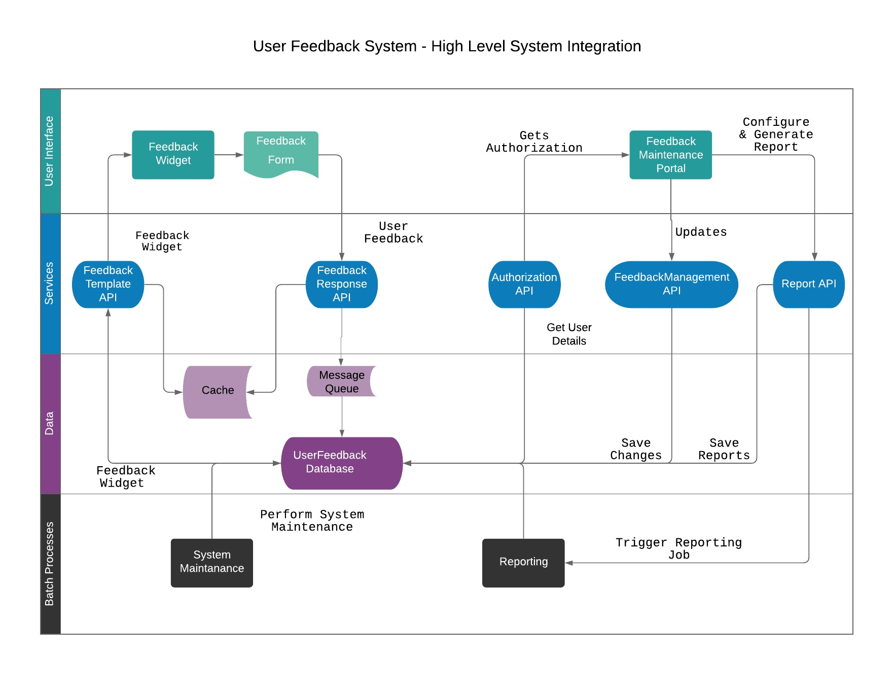
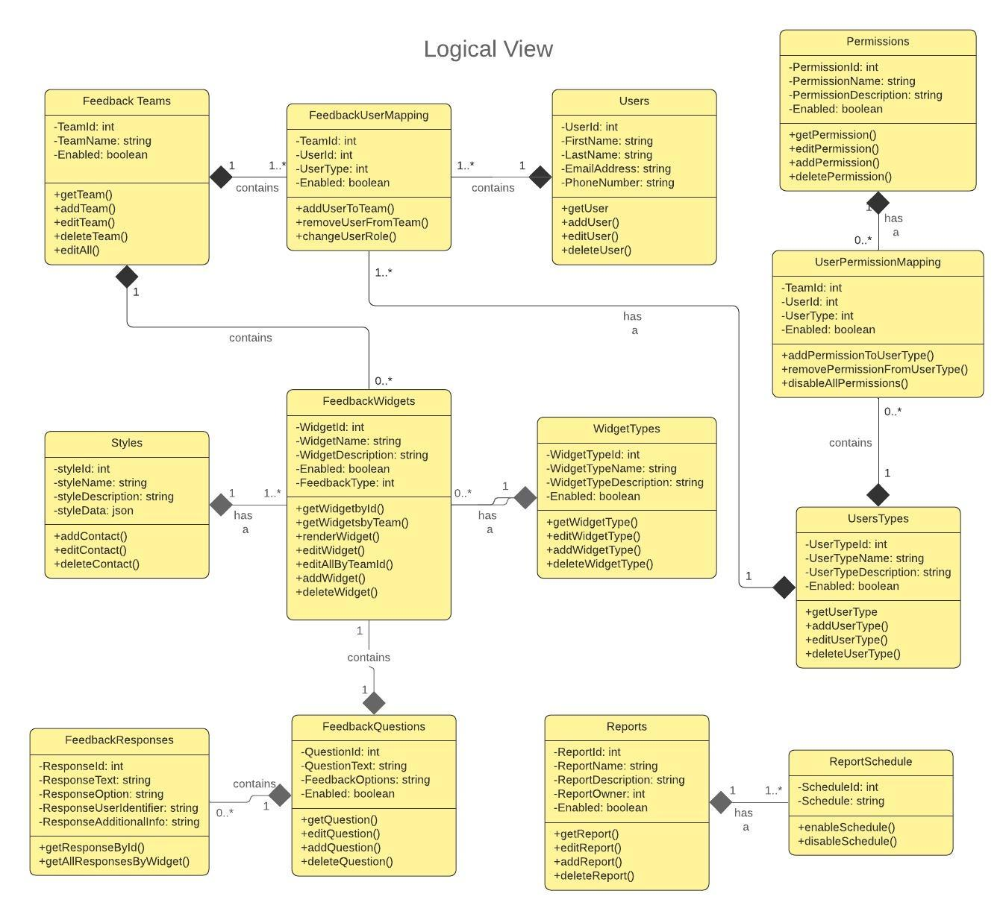
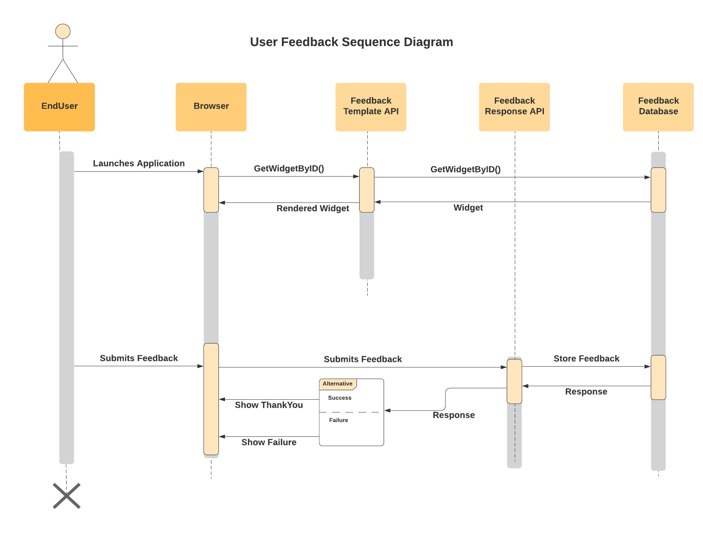
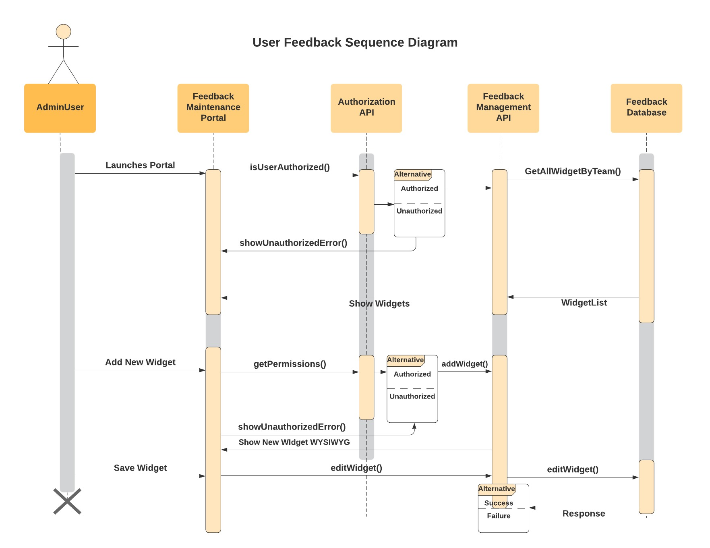
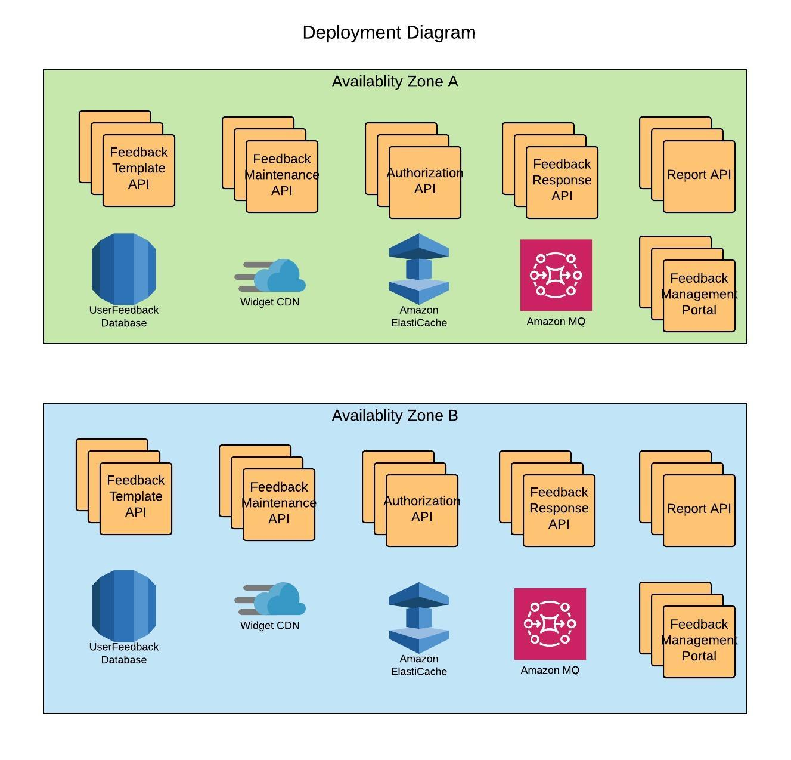
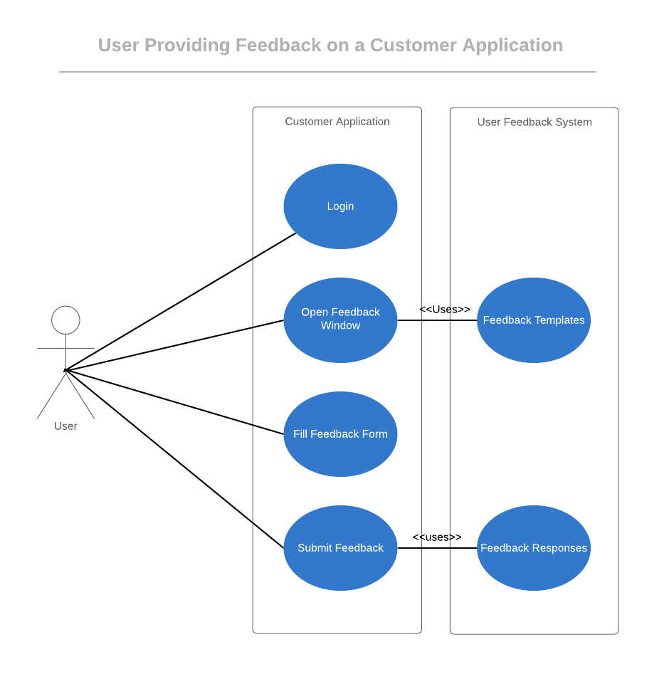
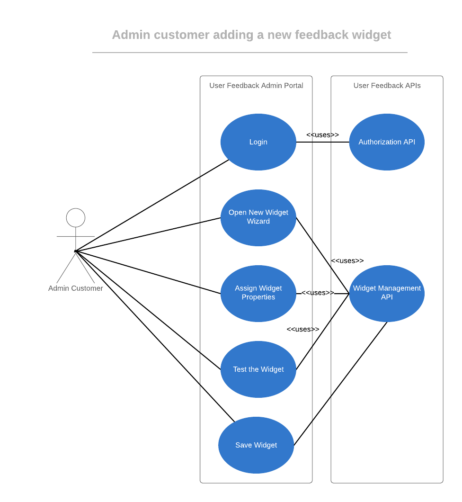

While designing the system we considered both functional and non-functional requirements and keeping these in mind, I have decided to implement a hybrid architecture which will be applied to different components differently. For example, we are using Abstract Data Types and Object oriented design as an overarching architectural pattern and will be applying it whenever possible. There are several candidates which are well suited for this pattern given their relationship and resemblance to Object oriented design.
We would also be using repository pattern for data stores. Repository pattern is best suited when data has to be shared between different system components and that is exactly the case here. By using a central database, we will be able to ensure data integrity, persistence and availability. Databases are usually considered single point of failure but we will use a Highly Available solution of database, which is provided by most database vendors these days in some variation.
We would also be following client-server architecture and implement our components using a three layered architecture. This will ensure Separation of Concerns within the components and ensure easy maintainability.
Finally, our reporting system will use pipes and filters. We think it is the best mechanism to extract and format the data. Since the process will be running sparsely, i.e. nightly or on demand, pipes and filters will provide an easily maintainable mechanism with acceptable performance for reporting.
We will explain the architecture of the system using Kruchten's 4 + 1 Model View to explain how components function and interact with each other from different perspectives.
Below is the high level component view of our conceptual system. This view enables to visualize the components in the system and how they interact on a very high level. This diagram also strengthens the layered architecture of our system as it clearly depicts the components according to the layer they support.
Logical view focuses mostly on achieving the functional requirements of a system. Here we are using a UML class diagram to show the logical view of the system. This view also depicts the Object Oriented nature of the architecture and repository pattern.
Process view will elaborate how different components will interact with each other for a given scenario or use case. We will use sequence diagrams to depict interaction between components in most common use cases.
We are using two different sequence diagrams to indicate two different use cases. First one elaborates how the components will interact and in what sequence to facilitate the use case of an end user providing feedback via the Customer’s web application. As we can see the components are interacting in a layered fashion with each layer performing a unique responsibility.
The second sequence diagram elaborates the use case when an Admin is creating a new widget.
We are using AWS as our cloud provider and will be using resources specific to AWS. To ensure we meet NFRs for availability and resilience, we are deploying all components across two different availability zones with each component having at least one failover node. All the traffic is load balanced to ensure seamless scalability.
Additionally, we are also using database replication across different availability zone, this will ensure that database does not becomes a single point of failure.
We will define three most common use cases and indicate on a high level which components will be involved in fulfilling the requests.
Here we see a typical flow in which a user of customer’s application can submit feedback at anytime while using the application.
Here we explain how an admin can use the Feedback Management portal to create new feedback widgets.
Here we can explain how an admin customer can login to the Feedback Management Portal and generate a report.

CS5744 Fall - Project 1 : Design of a software system by Ravindra Agrawal